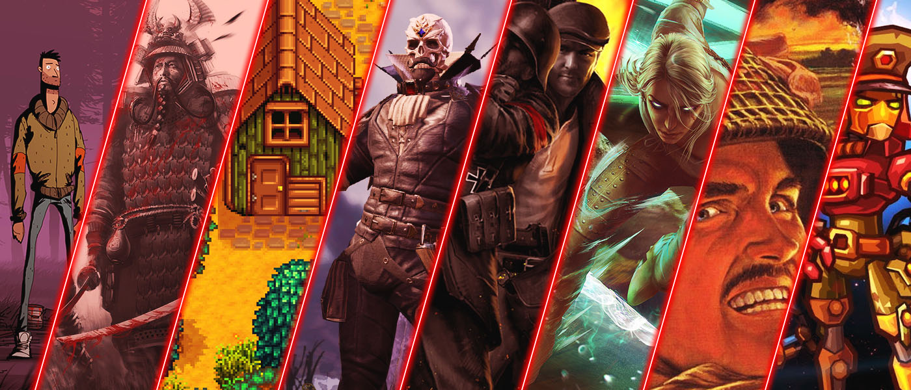

Retrospectiva Recomandărilor Săptămânii din 2018
Începând de anul acesta tragem cortina peste secțiunea de recomandări din Retrospectiva Săptămânii și, ca să marcăm momentul (și pentru că tot e sezonul trecerilor în revistă) am făcut mai jos o listă cu toate recomandările pe care le-am făcut în anul care a trecut. Sperăm că ați jucat măcar o parte dintre ele. Recomandările și mini-review-urile voastre vor avea în continuare un loc pe site, doar că vor avea un caracter mai puțin periodic, iar articolele vor fi publicate separat.

Mai
Iunie
Iulie
- Red Faction Guerrilla Re-Mars-tered
- Desperados: Wanted Dead Or Alive
- American Truck Simulator
- Return of the Tentacle
- Stardew Valley